프로세스가 실행되기 위해선 디스크에 있던 바이너리 프로그램이 반드시 메모리(RAM)에 적재(Load)되어야 합니다. 이때, 한정된 자원인 메모리 위에서 프로세스가 충돌하지 않으려면 실제 물리적 위치와 논리적 주소의 분리가 필수적입니다.
CPU는 컴파일 시점에 생성된 가상의 논리 주소만 보고 명령을 수행합니다. CPU가 메모리에 접근할 때마다 그 사이에 낀 MMU (Memory Management Unit) 칩이 하드웨어 레벨에서 현재 프로세스의 기준 레지스터(Relocation Register) 값을 더해 실제 물리 주소로 변환해줍니다.

[!TIP] 주소 바인딩(Binding)의 시점
- 컴파일 시간: 주소가 아예 고정되어 생성됨. (현대 OS에서는 쓰지 않음)
- 적재 시간: 메모리에 올라갈 때 재배치 됨.
- 실행 시간: 프로세스 실행 중에 위치가 메모리상에서 이동할 수 있음. 최신 OS들은 하드웨어(MMU) 지원을 받아 실행 시간 바인딩을 사용합니다.
초기 컴퓨터는 메모리에 프로세스를 통째로, 그리고 연속적으로 한 덩어리로 올리려 했습니다. 이를 “연속 메모리 할당”이라 하며, 크게 고정 분할(Fixed Partition)과 가변 분할(Variable Partition)로 나뉩니다. 두 방식 모두 피할 수 없는 ‘빈 공간의 낭비’, 즉 단편화를 유발합니다.

외부 단편화를 완벽하게 해결하기 위해 현대 OS가 가장 기본적으로 채택하는 아키텍처입니다.
물리적 메모리를 일정한 작은 고정 크기(예: 4KB)로 썰어서 이 공간을 프레임(Frame)이라 부릅니다. 논리적 메모리(프로세스) 역시 동일한 크기로 썰어서 이를 페이지(Page)라 부릅니다. 어차피 크기가 같으니 빈 프레임이 어디 있든 순서에 상관없이 페이지를 조각조각 집어넣을 수 있습니다.

TLB(Translation Look-aside Buffer) 캐시를 보통 동반합니다.페이징이 물리적인 잣대(같은 크기)로 무식하게 잘라버렸다면, 세그먼테이션은 논리적/의미적 관점으로 자릅니다. 예를 들어 코드는 코드끼리, 스택은 스택끼리, 데이터는 데이터끼리 가변적인 크기 덩어리(세그먼트)로 구분하여 저장합니다.

보호망이 훌륭한 세그먼테이션과 자원 누수를 막는 페이징. 둘 중 하나만 선택할 수는 없습니다. 따라서 현대 OS(멀틱스, 최신 리눅스/윈도우 변형 아키텍처)는 두 메커니즘을 융합시켰습니다.
논리적으로는 프로세스를 세그먼트 단위로 분리하여 권한 검사와 공유를 수행하고, 이 세그먼트를 램에 박아 넣을 때 다시 일정한 크기의 페이지 단위로 썰어서 분산 적재시키는 방식입니다.

프로세스는 세그먼트 테이블을 거쳐 해당 세그먼트 전용 페이지 테이블을 조회한 뒤, 최종 프레임 단위의 물리 메모리를 얻게 됩니다. 메모리 참조가 2단계를 거쳐야 하므로 하드웨어(TLB 캐싱)의 지원이 절대적입니다.
| 관리 정책 | 메모리 할당 포맷 | 주요 특징 및 한계점 |
|---|---|---|
| 고정 분할 | 연속 (크기 고정) | 크기가 맞지 않아 발생하는 내부 단편화 심각. |
| 가변 분할 | 연속 (크기 가변) | 남아도는 빈 공간이 흩어져서 못 쓰는 외부 단편화 유발. |
| 페이징 | 비연속 (프레임 단위) | 외부 단편화 100% 해결. 맵핑을 위한 페이징 테이블 오버헤드. |
| 세그먼테이션 | 비연속 (의미 단위) | 메모리 보호와 공유(Sharing)에 탁월. 크기가 달라 외부 단편화 재발. |
| 페이지화된 세그먼트 | 비연속 (혼합형) | 프로그래머 관점의 논리적 보호와, 물리 메모리의 외부 단편화 방지를 결합한 최신 구조. |